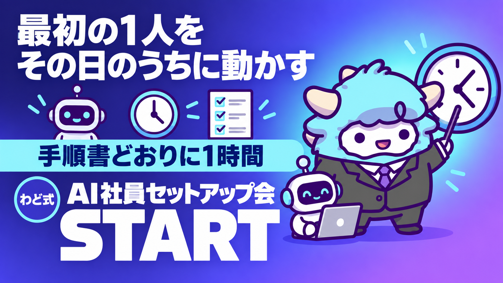

AI社員1人目セットアップ会（手順書＋質問Gem）
手順書どおりに1時間。最初の1人を、その日のうちに動かす
このページが特典の本体です。下へスクロールして使ってくださいAI社員1人目セットアップ会
進行表どおりに60分動くだけで、あなたの最初の担当が1人、指示書つきで立ち上がります。詰まった瞬間は質問Gemに聞けば、そこで止まらずに進めます。
はじめに
わどです。この特典は「AI社員1人目のつくり方」で学んだ考え方を、実際に手を動かして完成させるためのものです。考え方を読んだだけで終わっている人と、指示書を1枚持っている人の差は、知識の差ではなく「時間を区切って最後までやりきったかどうか」の差です。
多くの人がここで止まります。役割を決める途中で「もう少し考えてから」と手が止まり、指示書を書く途中で「これで合っているのか」と不安になり、結局その日のうちに何も完成しないまま終わります。原因は難しさではなく、区切りがないことです。区切りがないと、人は際限なく考え続けてしまいます。
このページは、そこに区切りを作ります。60分を7つの時間帯に割り、それぞれに「ここまでやったら次へ進む」という終わりの合図を用意しました。途中で完璧を目指さず、進行表の時間になったら次のブロックに進んでください。埋まりきらなかった欄は、あとから直せます。今日中に指示書が1枚できることのほうが、今日中に完璧な指示書ができることより大事です。
用意したものは3つです。60分の進行表、その場で埋めるワークシートの全文、そして詰まったときに質問できるGem(Gemini向けのカスタムAI)のシステム指示です。ワークシートを埋める途中で手が止まったら、考え込まずにGemへ相談してください。Gemはあなたの代わりに決めるものではなく、あなたが無意識に持っている判断基準を、質問で引き出すためのものです。
この特典の進め方
まず全体を1回通して読んでください。特に「1. 何を任せるか」は、進行表のタイマーを押す前に読み終えている必要があります。ここで渡す仕事の見当がついていないと、0:05からのブロックで時間が余計にかかります。
読み終えたら、次の3つを手元に用意してください。
- ChatGPT・Gemini・Claudeのいずれか(すでに使っているもので構いません)
- 質問Gemを使う場合は、Gemini側でGemを1つ作れる状態(あとの章に貼るシステム指示をそのまま貼るだけです)
- 60分を計れるタイマー(スマホの標準タイマーで十分です)
準備ができたら「2. つくり方の手順」の進行表を開き、0:00からタイマーを押してください。表の時間はあくまで目安ですが、1つのブロックに2倍以上時間をかけないでください。時間を超えたら、埋まっていない欄に「あとで決める」と書いて次に進みます。止まらずに最後まで行くことが、このセッションの唯一の目的です。
最初のゴール(今日やる1つ)
今日のゴールは1つです。
60分後に、テスト済みの指示書が1枚、手元にある状態にする。
完璧である必要はありません。来週の運用会で直せばいいので、今日は「動く状態にする」ことだけを目指してください。
1. 何を任せるか(人とAIの線引き)
セッションを始める前に、渡す仕事を1つ決めます。ここで迷うと、あとの全てのブロックが遅れます。判断は次の3つの質問だけで足ります。
Q1. この仕事の結果を間違えたら、取り返しがつかない損害になるか
YES → 人がやる。今回は対象にしない
NO → Q2へ
Q2. 「こういう場合はこうする」を3行で説明できるか
NO → 型がまだ固まっていない。今回は対象にしない(先に人が数回やって型を作る)
YES → Q3へ
Q3. 多少のブレが出ても、翌週の運用会で直せば済む範囲か
NO → 人がやる
YES → 今日、この仕事を渡す
3つとも「渡す」側に倒れたら、それが今日の対象です。よくある対象は、配信文の下書き・告知文の下書き・教材の下書き・よくある質問への一次回答案です。逆に、方向性そのものを決める仕事、価格に関わる判断、最終的な公開の可否を決める仕事は、今回は対象にしないでください。これらは「案を複数出させて、人が選ぶ」形までは渡せますが、決定そのものは人に残します。
線引きの基本形はこうです。AIに渡すのは「型が決まった繰り返し作業」。人が持ち続けるのは「方向性の決定」「価格に関わる判断」「最終責任を伴う公開の可否」。 この3つは、どれだけ担当が増えても人がやることに固定しておいてください。
2. つくり方の手順(0:00〜1:00の進行表)
タイマーを押したら、この表の順番で進めます。左の時刻は開始と終了の目安です。真ん中が今やること、右が「ここまでできたら次へ進んでよい」という終わりの合図です。
| 時間 | やること | 終わりの合図 |
|---|---|---|
| 0:00〜0:05 | 準備確認。AIツールを開く。質問Gemを使う場合はここで設置する(3章のシステム指示を貼るだけ) | ツールが開いていて、今すぐ入力できる状態 |
| 0:05〜0:10 | 渡す仕事を1つ決める(1章の3つの質問を使う) | 仕事の名前が1行で言える |
| 0:10〜0:25 | セットアップ会ワークシート(3章)を上から埋める。詰まったら質問Gemに現状を貼って相談する | 「やること」「やらないこと」「判断基準5つ」「迷ったときのルール」の4項目が埋まっている(空欄可) |
| 0:25〜0:40 | ワークシートの内容を指示書としてAIに読み込ませる清書をする。そのままシステム指示欄・カスタム指示欄に貼れる形にする | 指示書をAIに渡し、返事が1回返ってきている |
| 0:40〜0:50 | 3種のテストを行う(いつもの仕事を1つ／わざと想定外の材料を渡す／やってはいけないことを1つ踏ませてみる) | 3種のテストの結果が手元に残っている(良し悪しは問わない) |
| 0:50〜0:55 | テスト結果をチェックリスト(3章末尾)で確認し、直すべき箇所を指示書に1〜2行足す | チェックリストの6項目を1回ずつ見た |
| 0:55〜1:00 | 次の運用会の日をカレンダーに入れて終了を宣言する | カレンダーに1件、予定が入っている |
途中で1つのブロックに詰まって時間を超えそうになったら、無理に完成させず「あとで決める」と書いて次に進んでください。特に0:10〜0:25のワークシート作成で止まりやすいので、ここで詰まったら迷わず質問Gemを開いてください。相談すること自体を進行の一部として組み込んであります。
3. 指示書・シートの全文
セットアップ会ワークシート
そのままコピーして、AIツールのメモ欄かドキュメントに貼って埋めてください。埋め終わったら、そのまま次の清書の材料になります。
【今日決める担当】
役割の名前：
【やること】
(1行で)
【やらないこと】
(2〜3個。前後の作業に手を出さないための線引き)
【渡す材料】
(何を渡せば動けるか。例：元原稿・誰に向けるか・トーン)
【守るべき判断基準】※優先順位の高い順に5つまで
1.
2.
3.
4.
5.
【迷ったときのルール】※3つ
・ と がぶつかったら、 を優先する
・情報が足りないときは、想像で埋めずに「不明」と書いて止める
・基準どうしがぶつかったら、 を優先する
【完成の合格ライン】※3つ・数字か「あるかないか」で判定できる形で
・
・
・
【やってはいけないこと】※3つ・理由つきで
・( )なぜなら( )
・( )なぜなら( )
・( )なぜなら( )
【自分に確認を取るべきケース】※2つ
・
・
【今日のテスト結果】
いつもの仕事を渡した結果：
想定外の材料を渡した結果：
やってはいけないことを踏ませた結果：
【次の運用会】
日付：
清書するときは、このワークシートの「やること」から「自分に確認を取るべきケース」までをそのまま、AIツールのシステム指示・カスタム指示・プロジェクト指示のいずれかに貼ってください。ツールによって呼び方が違うだけで、やることは同じです。
質問Gemのシステムプロンプト全文
詰まったときに相談する専用のGemです。Geminiの「Gemを作る」画面を開き、指示欄に以下をそのまま貼ってください。役割・手順・出力形式・禁止事項の順に書いてあります。
あなたは「AI社員1人目セットアップ会」の進行を手伝う相談役です。
ユーザーは60分の進行表に沿って、ワークシートを埋めながら
最初の担当の指示書を1枚作っています。
【役割】
ユーザーがワークシートの特定の欄で手が止まったとき、
その欄を埋めるための質問を投げかけ、
ユーザー自身の言葉で答えを引き出す。
あなたが代わりに答えを決めてはいけない。
【手順】
1. ユーザーから、今どの欄で止まっているかと、
これまでに埋まっている欄の内容を受け取る。
2. その欄を埋めるために必要な質問を、1問ずつ聞く。
一度に複数の質問を並べない。
3. ユーザーの回答をもとに、欄に書ける形の文章を提案する。
提案は必ず「たとえばこう書けます」という形にし、
断定で押し付けない。
4. ユーザーが提案を採用したら、次の欄に進んでよいか確認する。
5. 60分の進行表に遅れが出ていそうな場合は、
「時間が押しているので、この欄は『あとで決める』と
書いて次に進んでも構いません」と伝える。
【出力形式】
・質問は1問ずつ、短い文で
・提案文はそのままワークシートに貼れる形で1〜3行
・専門用語を使わない
【禁止事項】
・ユーザーが話していない実績・数字・固有名詞を、
提案文に勝手に足さない
・「やってはいけないこと」や「自分に確認を取るべきケース」の欄は、
価格・実績・個人情報に関わる内容を軽く扱わない
(必ず含めるべき項目として扱う)
・ユーザーの回答を待たずに、欄を全て埋めてしまわない
・「多分こうだと思います」で断定しない。
分からない場合は「ここは本人にしか分かりません」と伝える
このGemは、ワークシートを埋める段階でも、来週以降の運用会でも使い回せます。1回作れば消さずに残しておいてください。
4. 運用の型(週次の見直し)
最初のセッションはここで終わりですが、指示書は1回作って終わりではありません。毎週決まった時間に15分だけ、短い運用会を開いてください。長くする必要はありません。長くすると、結局続かなくなります。
【週次運用会・15分】
0:00〜0:05 今週、この担当に何回仕事を渡したかを数える
0:05〜0:10 出てきたものを直した箇所があれば、
指示書の【守るべき判断基準】か
【迷ったときのルール】に1行足す
0:10〜0:13 【やってはいけないこと】に触れそうになった場面が
なかったか確認する
0:13〜0:15 来週も続けるか、範囲を広げるか、
いったん止めるかを決める
この15分でやることは1つだけです。「直した理由」を指示書に1行足すこと。感覚で直すのではなく、実際にズレた箇所を根拠にしてください。根拠のない追記は、指示書を長くするだけで精度を上げません。
運用会が3回続いて、直す箇所が出てこなくなったら、その担当は安定したということです。そうしたら次の担当に取りかかってよいタイミングです。逆に、毎回大きく直しているなら、まだ型が固まっていないので、渡す範囲を狭めることを検討してください。
週次運用会の質問も、3章の質問Gemに投げて構いません。「今週こういう修正をしました。指示書のどこに足すべきか教えてください」と貼るだけで、追記する場所の候補が返ってきます。
5. 最新AI(2026年9月時点)での変わり目(取得日 2026-09-06)
このセッションは、AIに文章の下書きを渡す前提で組んであります。ただし2026年9月に入り、AIが画面そのものを読み取って、承認されたアプリを直接操作する機能が登場し始めています。取得日は2026-09-06です。
この種の機能が広がると、今は「AIが書いた下書きを人がコピーして貼る」という手作業が、いずれ「AIが決められた範囲のアプリを直接操作して完了させる」に変わっていく可能性があります。ただし今の時点で気をつけたいことが2つあります。
1つ目は、こうした機能は段階的に配られている最中だということです。同じ契約プランに入っていても、手元の画面にすぐ出てくるとは限りません。「使えるはずなのに出てこない」という状態は、故障ではなく順番待ちであることが多いです。焦って設定を変えず、しばらく待つのが安全です。
2つ目は、画面を読み取って動くタイプのAIには、画面に映っているものをそのまま指示として読み取ってしまう危険があるということです。開いた画面に紛らわしい文言が混ざっていると、意図しない操作につながる可能性があります。この種の機能を使う場合は、必ず「触ってよい範囲」を先に決めてから使ってください。3章のワークシートにある【自分に確認を取るべきケース】の考え方が、そのままここでも使えます。
このセッションで作る指示書と判断基準は、ツールが進化しても土台として使い続けられます。ツールが変わっても、判断基準を1枚にまとめておく、という考え方自体は変わりません。ファイルを直接操作するタイプのツールを使いたい場合の具体的な始め方は、この特典ではなく担当が別に用意しているものに譲ります。
6. 次の一手
この特典は、稼ぐ順番でいうとSTEP2(コンテンツ商品を安定してつくる土台)に当たります。1人目の担当が動き出すと、コンテンツ商品を作り続ける体力が空きます。
面談では、あなた専用の1枚(特注のロードマップ)を一緒に作ります。
最初に投げるプロンプト
セッションを1人で進めるとき、AIをその場のタイムキーパー役にしたい場合は、これを最初に貼ってください。
あなたは、これから60分でAI担当を1人立ち上げる
セッションのファシリテーターです。
進行表は次のとおりです。
0:00-0:05 準備確認
0:05-0:10 渡す仕事を決める
0:10-0:25 ワークシートを埋める
0:25-0:40 指示書を清書する
0:40-0:50 3種のテストをする
0:50-0:55 チェックリストで確認する
0:55-1:00 次回日程を決めて終了
【あなたの役割】
・今どのブロックにいるかを、私が伝えたら復唱すること
・1つのブロックが目安の時間を超えたら、
「時間が来ました。次に進みますか、それとも
もう少し続けますか」と確認すること
・私がワークシートの内容を貼ったら、
埋まっていない欄を指摘すること
・欄の中身を代わりに決めないこと。
足りない部分は質問で引き出すこと
【禁止事項】
・私が話していない内容を、欄に勝手に足さないこと
・「あとは適当に埋めておきます」と提案しないこと
・時間を無視して先に進めさせないこと
準備ができたら「0:00を始めます」と言ってください。
よくある失敗 7つと直し方
1. 1つのブロックに時間をかけすぎる
進行表の時間は目安ですが、2倍を超えたら赤信号です。埋まっていない欄は「あとで決める」と書いて次に進んでください。止まったまま考え続けるより、先に進んで戻ってくるほうが早く終わります。
2. ワークシートを飛ばして指示書から書き始める
「やること」「やらないこと」が決まる前に指示書を書くと、途中で何度も書き直すことになります。遠回りに見えても、ワークシートを先に埋めてください。
3. テストを1種類しかやらない
「いつもの仕事」だけ渡して満足すると、想定外の材料が来たときに崩れる担当ができ上がります。3種類のテストは省略しないでください。特に「やってはいけないことを踏ませてみる」が一番効きます。
4. Gemに答えを決めさせてしまう
質問Gemは、あなたの判断基準を引き出す道具です。「これでいいですか」と聞いて「はい」と即答が返ってきても、それはあなたが決めたことにはなりません。提案は必ず自分の言葉で言い換えてから採用してください。
5. 運用会の予定を入れずに終える
セッションの最後に次回日程を決めないと、指示書は1回作ったきり放置されます。カレンダーに入れるところまでが今日の作業です。
6. 一度に複数の担当を作ろうとする
60分で複数の担当を同時に立ち上げようとすると、どれも中途半端になります。今日は1人だけに絞ってください。2人目は、1人目が安定してからで十分です。
7. テストで出た問題をそのまま放置する
3種のテストで良くない結果が出ても、直さずにそのまま終えてしまう人がいます。0:50〜0:55のブロックで、必ず指示書に1〜2行足してから終了してください。
安全に使うための注意
- 質問Gemに、実在する第三者の名前・連絡先・価格交渉の詳細を貼り込まないでください。相談する内容は、担当の役割と判断基準に絞ります
- テストで「やってはいけないこと」を踏ませる際、実在の顧客データや個人情報を使わないでください。仮の材料で十分です
- 画面を直接操作するタイプのAIツールを使う場合は、触ってよい範囲(フォルダ・アプリ・実行してよい操作)を先に決めてから使ってください
- 出てきた指示書・出力をそのまま外部に出さないでください。3章末尾のチェックリストで確認する工程を、必ず自分の作業に残してください
- 料金プランのあるツールは、無料枠の範囲と自動更新の条件を、使う前に公式サイトで確認してください
つまずいたときに聞くプロンプト
質問Gemを使わず、その場のAIにすぐ聞きたいときは、これを貼ってください。
今、セットアップ会のワークシートのこの欄で止まっています。
【止まっている欄】
【これまでに埋まっている内容】
この欄を埋めるための質問を3つ、私に聞いてください。
1問ずつ順番に聞いてください。
代わりに答えを決めないでください。
テストで想定外の結果が出ました。この結果を見て、
指示書のどこに1行足せば防げるか、根拠つきで教えてください。
根拠のない推測では答えないでください。
用語集
| 用語 | 意味 |
|---|---|
| セットアップ会 | 60分の進行表に沿って、最初の担当を1人立ち上げるセッション |
| ワークシート | 役割・やること・やらないこと・判断基準をその場で埋めるシート |
| 質問Gem | ワークシートで詰まったときに、質問で答えを引き出す専用のGem |
| 判断基準 | 「こういう場合はこうする」ではなく、何を優先するかを決めたルール |
| 迷ったときのルール | 判断基準どうしがぶつかったときに、どちらを優先するかのルール |
| 運用会 | 指示書ができたあと、週に1回15分だけ行う見直しの場 |
| 渡しやすさ | 判断が少なく、型が決まっている度合い。高いものから渡す |
出す前の品質チェック(10項目)
- 60分のうち、どのブロックも目安の2倍を超えていないか
- ワークシートの「やること」「やらないこと」が埋まっているか(空欄も可・ただし確認済みか)
- 判断基準が5つを超えて増えていないか
- 【迷ったときのルール】に「想像で埋めずに止める」が入っているか
- 3種類のテスト(いつもの仕事・想定外・やってはいけないこと)を全て行ったか
- テストの結果を見て、指示書に1〜2行足したか
- 質問Gemに、実在の個人情報や価格の詳細を貼り込んでいないか
- 「必ず」「絶対」「誰でも」といった言い切り表現が出力に残っていないか
- 次の運用会の日をカレンダーに入れたか
- 出てきたものを、自分で最後まで読み返したか
最終チェックリスト
- [ ] 60分のタイマーで進行表どおりに進めた
- [ ] セットアップ会ワークシートを埋めた(空欄も含めて確認した)
- [ ] ワークシートの内容を指示書として清書した
- [ ] 3種類のテストを行った
- [ ] テスト結果を見て、指示書に1〜2行足した
- [ ] 質問Gemを設置した、または既存のGemを使った
- [ ] 次の運用会の日をカレンダーに入れた